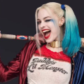

BATMAN
Bruce Wayne es el único personaje que se identifica como Batman y aparece en Batman, Detective Comics, Batman y Robin, y Batman: The Dark Knight. Dick Grayson vuelve al mando de Noghtwing


Harley Quinn
La creación de Harley Quinn fue una idea de último minuto propuesta por el escritor estadoudinense Paul Dini para modificar una escena del vigésimo episodio de Batman: la serie animada


BATMAN
Bruce Wayne es el único personaje que se identifica como Batman y aparece en Batman, Detective Comics, Batman y Robin, y Batman: The Dark Knight. Dick Grayson vuelve al mando de Noghtwing